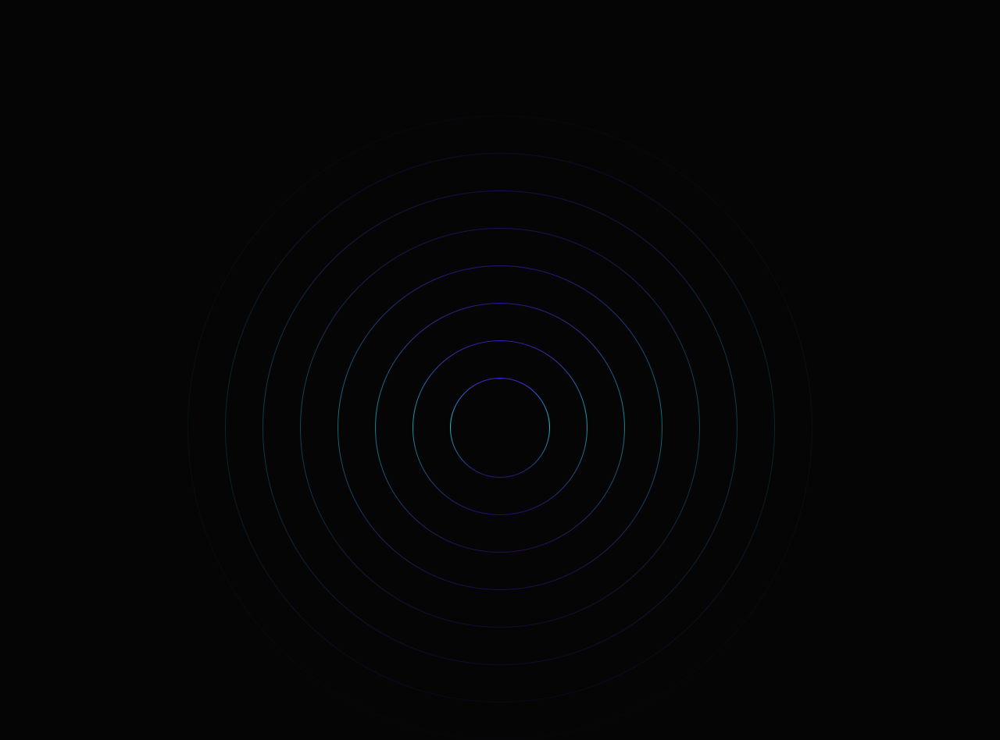
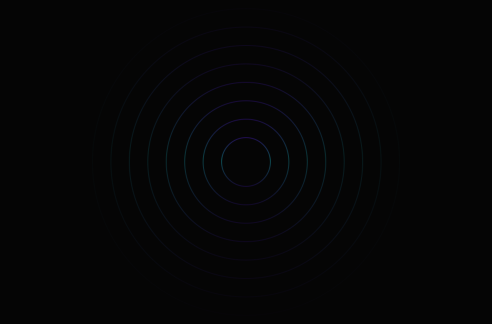
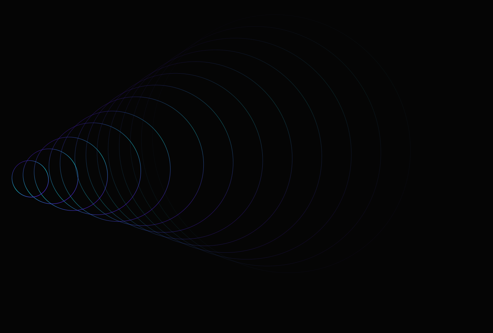
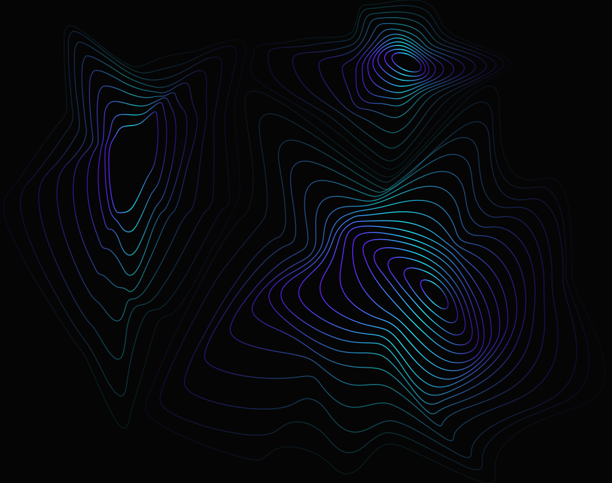
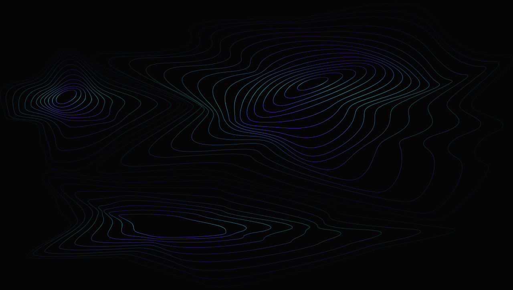

Seven section backgrounds harvested from codecave.pro/src/assets/images/.
Untouched originals live in imagery/source/; the copies below carry an added
#050505 ground so they reproduce in any viewer. This is the brand's one
non-photographic image system, and it is built entirely from strokes.
Every file has a fill="none" root. There is not one filled
shape in the set. Falloff is produced by redrawing the same orb at descending
opacity on a growing radius — not by a blur, not by a radial gradient fill. That
is why the art stays crisp at any scale and costs nothing to render.
Stroke gradients use three stops, and only three:
#5F20FE · brand-500 · action
#20EFFE · the cyan — imagery-only since the rebuild
#391398 · imagery-only
#391398 and #4C4759
(the world-map.svg landmass stroke) carry production art while going
unrecorded by every token file — and the 2026 rebuild, which removed cyan from the ramp
entirely, still gives them no name. They are recorded here as art
literals — never UI, never text. Cyan's only token-layer survivor is the deep
#077689 in the technology-card wash.






The photography set was not taken as brand imagery.
Eleven of the thirteen work-process-img-*.jpg files are 400×400 squares —
by rendered size and role those are thumbnails or avatars, and the brand bars avatars as
brand imagery. No raster decoder was available in this environment, so their ground color is
unmeasured. They were excluded on role, not cleared on contrast, and that
distinction is recorded in DESIGN.md §11 rather than smoothed over.
Partner marks
(aws-partner.png, autodesk-partner.png,
hubspot-partner.png, microsoft-partner.png) are third-party
trademarks used as trust cues. They are evidence of a conversion pattern, not CODECAVE
brand assets, and are not part of this system.
world-map.svg is preserved in
imagery/source/ but kept out of the gallery at 1.4 MB — it is a
full-page background, not a plate.